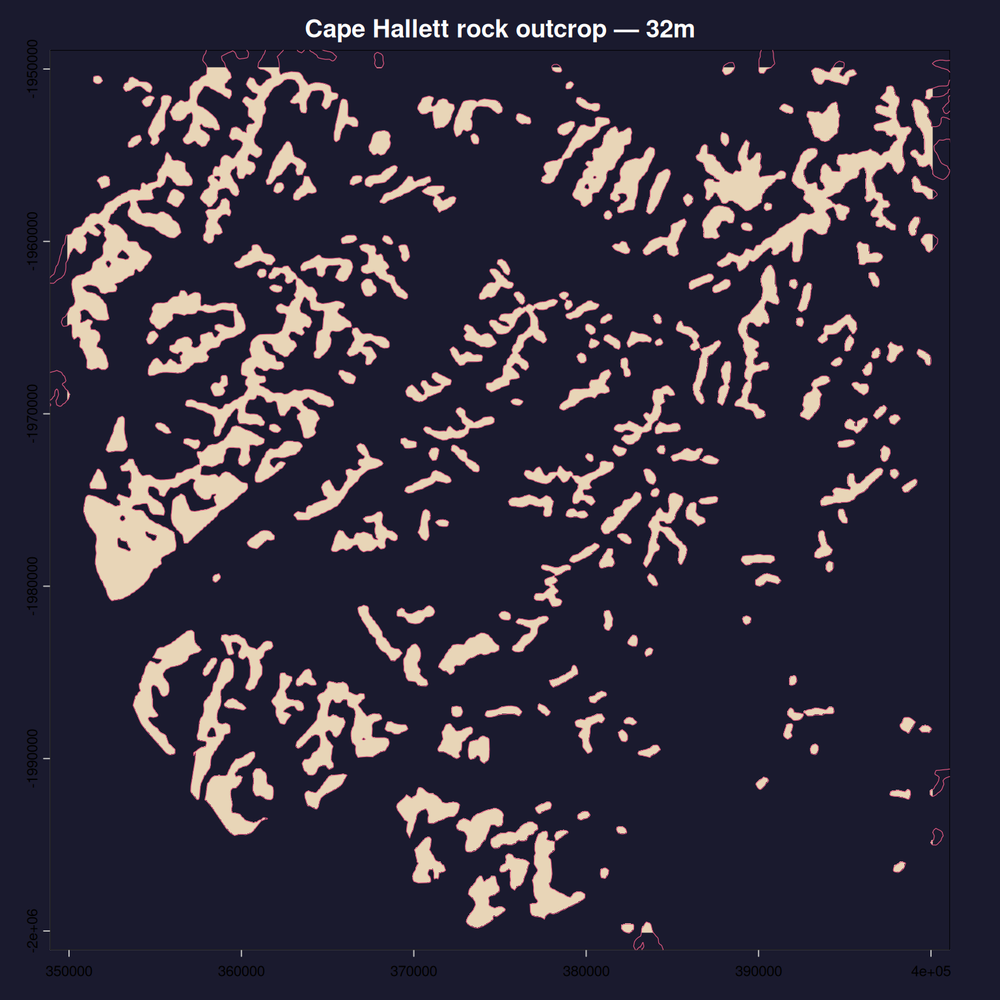
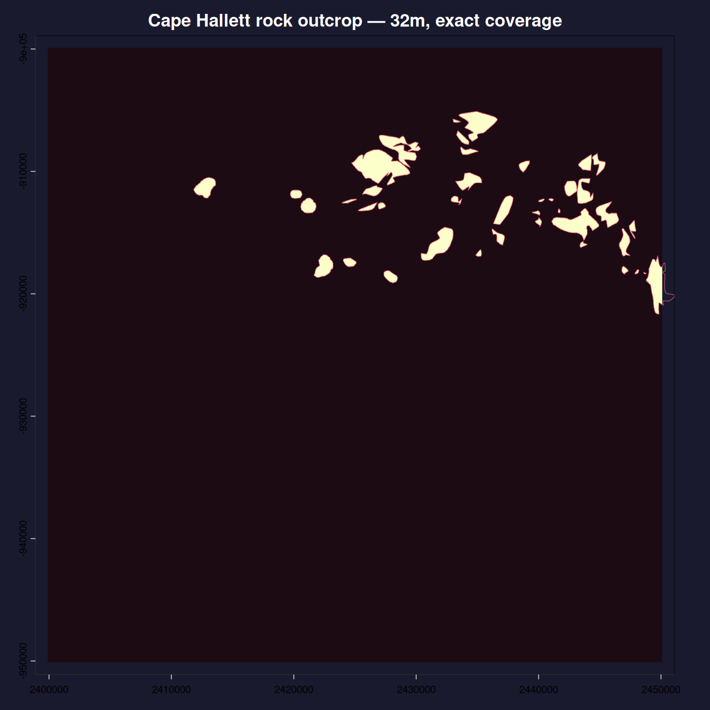
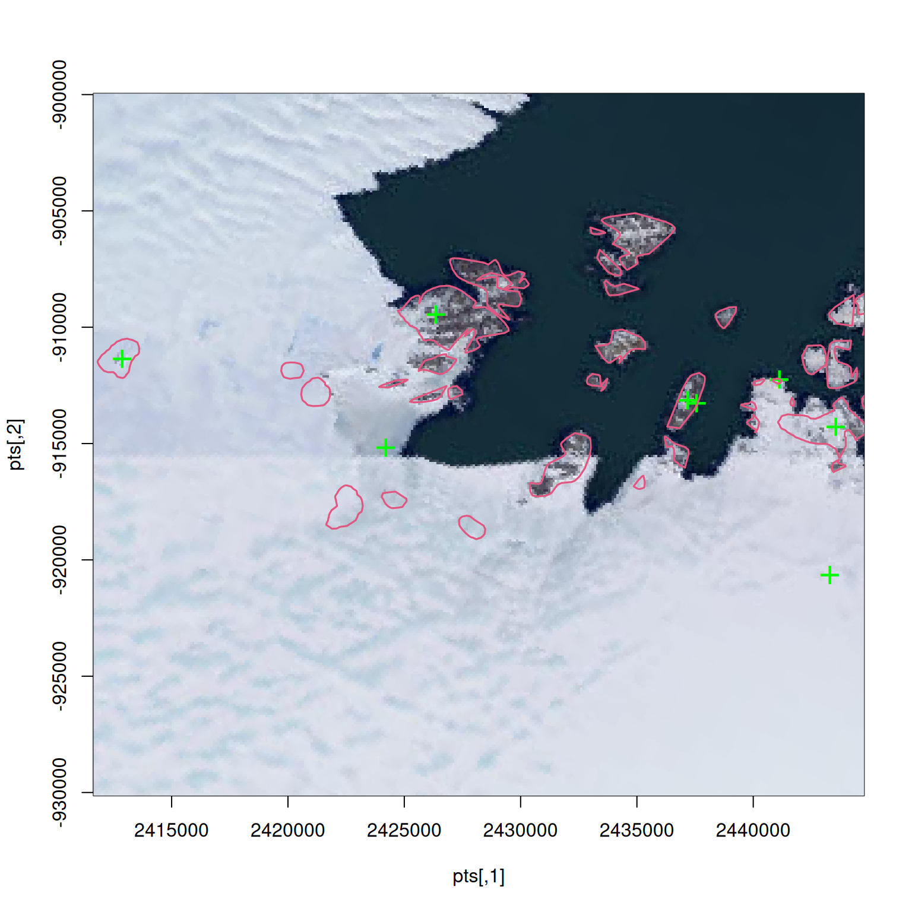

# REMA 32m DEM mosaic — we read only the grid spec, no pixel values
dsn <- paste0(
"/vsicurl/https://raw.githubusercontent.com/mdsumner/rema-ovr/",
"main/rema-vrt/32m_dem_tiles.vrt")
# Antarctic rock outcrop polygons (v7.3, Burton-Johnson et al.)
shp <- paste0(
"/vsizip/{/vsicurl/https://github.com/AustralianAntarcticDivision/",
"rema.proc/raw/refs/heads/master/01_rock_classification/",
"Medium_resolution_vector_polygons_of_Antarctic_rock_outcrop_-_",
"VERSION_7.3.zip}/Medium resolution vector polygons of Antarctic ",
"rock outcrop - VERSION 7.3/",
"add_rock_outcrop_medium_res_polygon_v7.3.gpkg")
# REMA tile index — for choosing a view window
rema_tiles <- paste0(
"/vsizip/{/vsicurl/https://data.pgc.umn.edu/elev/dem/setsm/REMA/",
"indexes/REMA_Mosaic_Index_latest_shp.zip}/REMA_Mosaic_Index_v2_shp")Antarctica’s exposed rock — the ice-free ground — has been mapped as 25,954 polygons covering nunataks, coastal outcrops, and mountain ranges across the continent. The Reference Elevation Model of Antarctica (REMA) provides a 2m DEM mosaic of the entire ice sheet, tiled at multiple resolutions.
What does it take to rasterize those polygons onto the REMA grid? At 32m resolution, the grid is 170318 x 182568 pixels. A raster at that size would require enormous memory, but controlledburn does it in under a second, producing 30-150 MB of sparse output, then serves up any individual tile on demand.
NoteA note on the surrounding tools
This post reaches for vapour, terra, gdalraster, grout, and a few others alongside controlledburn itself, without much ceremony about why one is used here and another there. That’s a fair reflection of where things stand: controlledburn is under heavy, active development, and the tooling around it — how you get a grid spec, read geometry, or write a COG — has mattered less than getting the core right. Some of this will likely consolidate as the package settles. Treat the package mix here as a snapshot of current convenience, not a considered API.
Setup
Three cloud-hosted datasets, read directly via GDAL virtual filesystem paths.
Read
The raster is never opened — vapour_raster_info() reads only the metadata (extent, dimensions, CRS). The polygons are read as raw WKB bytes.
library(terra)terra 1.9.44tiles <- terra::vect(rema_tiles)Warning: [vect] Reading layer: REMA_Mosaic_Index_v2_2m
Other layers: REMA_Mosaic_Index_v2_10m, REMA_Mosaic_Index_v2_32mraster_info <- vapour::vapour_raster_info(dsn)
rock_info <- vapour::vapour_layer_info(shp)Warning: Unhandled projection method Polar_Stereographic (GDAL error 6)Warning: unable export SRS to XMLrock <- wk::wkb(vapour::vapour_read_geometry(shp),
crs = rock_info$projection$Wkt)
cat(sprintf("Grid: %s × %s pixels (%.0f billion cells)\n",
format(raster_info$dimension[1], big.mark = ","),
format(raster_info$dimension[2], big.mark = ","),
prod(as.numeric(raster_info$dimension)) / 1e9))Grid: 170,318 × 182,568 pixels (31 billion cells)cat(sprintf("Polygons: %s geometries\n",
format(length(rock), big.mark = ",")))Polygons: 25,954 geometriesRasterize the continent
One call rasterizes every polygon onto the full continental grid. The output is a sparse table of run-length encoded interior cells — no dense matrix is allocated, no pixel values are touched.
library(controlledburn)
system.time({
ba <- burn(rock, extent = raster_info$extent,
dimension = raster_info$dimension, mode = "approx")
}) user system elapsed
0.291 0.056 0.347 ba<controlledburn> 170318 x 182568 grid, 25954 geometries
runs: 1704432 (70650819 interior cells)
edges: 0 polygon boundary cells
sparsity: 99.8% emptycat(sprintf("\nObject size: %.0f MB\n", as.numeric(lobstr::obj_size(ba)) / 1e6))
Object size: 27 MBCoverage mode computes exact boundary fractions — slower, but the total burned area equals the true polygon area to floating-point precision:
system.time({
be <- burn(rock, extent = raster_info$extent,
dimension = raster_info$dimension, mode = "coverage")
}) user system elapsed
4.608 0.283 4.891 be<controlledburn> 170318 x 182568 grid, 25954 geometries
runs: 1662668 (66525907 interior cells)
edges: 6548354 polygon boundary cells
sparsity: 99.8% emptyLook at a tile
The sparse output covers the whole continent but we can extract any sub-window instantly with crop_burn(). Here: a 50 km REMA tile of the Windmill Islands, near Casey station.
ll <- cbind(lon = 110.3, lat = -66.3)
xy <- reproj::reproj_xy(ll, crs(tiles), source = "EPSG:4326")
idx <- which(terra::is.related(tiles, vect(xy), "intersects"))
tile_ex <- as.vector(ext(tiles[idx, ]))ma <- materialize_chunk(crop_burn(ba, tile_ex))
cat(sprintf("Tile: %d × %d pixels\n", ncol(ma), nrow(ma)))Tile: 1570 × 1570 pixels# Rock polygons that overlap this tile
rock_idx <- unlist(
geos::geos_strtree_query(
geos::geos_strtree(geos::as_geos_geometry(rock)),
tiles[idx, ]))
par(bg = "#1a1a2e", mar = c(3, 3, 2, 1))
plot(tiles[idx, ], col = NA, border = NA,
main = "Windmill Islands rock outcrop — 32m",
col.main = "white", col.axis = "grey60")
ximage::ximage(ma, tile_ex, add = TRUE,
col = c("#1a1a2e", "#e8d5b7"))
plot(rock[rock_idx], add = TRUE, border = "#e05780", lwd = 0.6)
mc <- materialize_chunk(crop_burn(be, tile_ex))
par(bg = "#1a1a2e", mar = c(3, 3, 2, 1))
plot(tiles[idx, ], col = NA, border = NA,
main = "Windmill Islands rock outcrop — 32m, exact coverage",
col.main = "white", col.axis = "grey60")
ximage::ximage(mc, tile_ex, add = TRUE,
col = hcl.colors(64, "Lajolla", rev = TRUE))
plot(rock[rock_idx], add = TRUE, border = "#e05780", lwd = 0.6)
At 32m resolution the two modes are nearly identical. The difference is sub-pixel boundary treatment:
n_diff <- sum(ma != mc)
cat(sprintf("Cells that differ: %s out of %s (%.3f%%)\n",
format(n_diff, big.mark = ","),
format(length(ma), big.mark = ","),
100 * n_diff / length(ma)))Cells that differ: 7,360 out of 2,464,900 (0.299%)Summary of the lazy rasterization process
controlledburn burned 25,954 polygons onto a 31-billion-cell grid in under a second, producing a sparse run-length table small enough to hold in memory. Any tile can be extracted and materialized on demand. The raster was never read — only its grid specification. The polygons were never validated or reprojected — just raw WKB bytes from a cloud-hosted GeoPackage.
This is rasterization as an O(perimeter) operation: the cost scales with the complexity of the polygon boundaries, not the number of pixels in the grid. The sparse output is a reusable intermediate — downstream processing (zonal statistics, masking, tiling) operates on the same table without re-burning.
Creating a raster file
Now we have a very dense version of our rock layer as a latent raster, we can materialize arbitrary windows of it and write them to an actual raster file. The strategy: create a SPARSE_OK Cloud-Optimized GeoTIFF (COG), iterate over spatial tiles, crop the sparse burn result to each tile, materialize the dense matrix, and write it via gdalraster. Tiles with no burned pixels are skipped entirely — SPARSE_OK means unwritten tiles cost nothing on disk.
Why crop_burn()?
crop_burn() is the spatial subsetting workhorse. Given a controlledburn object covering an arbitrarily large grid, it filters the sparse tables (runs, edges, lines, points) to a target extent and re-bases row/col indices to 1. No dense matrix is ever allocated — it is pure data-frame filtering, so the cost depends only on how many run-length entries fall inside the window, not on how many pixels the full grid contains. This is what makes it feasible to iterate over thousands of tiles without blowing up memory: each iteration crops, materializes a small dense block, writes it, and discards it.
Why super-tiles instead of native 512×512 blocks?
The COG internal tiling is 512×512, but writing one 512×512 block at a time means ~120,000 write calls for the full grid. GDAL’s RasterIO() accepts arbitrary windows — they don’t have to align with the internal block grid — but it works best when the window is a multiple of the native block size. Grouping into “super-tiles” of 2048×2048 (4×4 native blocks) brings the tile count down to ~8,000 while keeping each dense allocation under 16 MB. The dense output from materialize_chunk() is not itself tiled; it is a plain row-major matrix. The tiling structure exists only in the GeoTIFF container and is handled entirely by GDAL on write.
The write loop
library(controlledburn)
library(gdalraster)
outfile <- file.path(tempdir(), "rema_approx.tif")
block_size <- 512L
ext <- ba$extent
dm <- ba$dimension
gdalraster::set_config_option("GDAL_NUM_THREADS", "ALL_CPUS")
ds <- create(
format = "COG",
dst_filename = outfile,
xsize = dm[1], ysize = dm[2],
nbands = 1,
dataType = "Int32",
options = c(paste0("BLOCKSIZE=", block_size),
"SPARSE_OK=YES",
"COMPRESS=DEFLATE",
"OVERVIEW_RESAMPLING=NEAREST",
"NUM_THREADS=ALL_CPUS"),
return_obj = TRUE
)
ds$setGeoTransform(vaster::extent_dim_to_gt(ext, dm))
ds$setNoDataValue(band = 1, 0)Build a tile index with grout, then pre-filter to rows that contain any burned data. This avoids even visiting tiles over open ocean or interior ice sheet:
superblock <- block_size * 4
gg <- grout::grout(dm, ext, blocksize = superblock)
tiles <- grout::tile_index(gg)
# Keep only tile-rows that intersect at least one data row
data_rows <- unique(c(ba$runs$row, ba$edges$row,
ba$lines$row, ba$points$row))
tiles <- tiles[tiles$tile_row %in%
unique(ceiling(data_rows / superblock)), ]The loop itself is straightforward: crop → materialize → write.
tiles_written <- 0L
for (i in seq_len(nrow(tiles))) {
sub <- crop_burn(ba, c(tiles$xmin[i], tiles$xmax[i],
tiles$ymin[i], tiles$ymax[i]))
if (nrow(sub$runs) == 0 && nrow(sub$edges) == 0) next
mat <- materialize_chunk(sub, fun = "id")
mat[is.na(mat)] <- 0
ds$write(band = 1,
xoff = tiles$offset_x[i], yoff = tiles$offset_y[i],
xsize = tiles$ncol[i], ysize = tiles$nrow[i],
rasterData = as.integer(t(mat)))
tiles_written <- tiles_written + 1L
}
ds$flushCache()
ds$close()## ~445 seconds elapsed
## tiles written: 3,482 of 7,511
## file size: 26,782 KB
## output: 170318 × 182568 Int32, nodata=0The result is a valid COG — internally tiled, compressed, with overviews — that weighs in at around 26 MB on disk for a 31-billion-cell grid. Only the tiles that actually contain rock outcrop carry any data.
The compressed file is informationally equivalent to the sparse burn object itself — both encode exactly the same set of non-empty cells. The burn object in memory is lobstr::obj_size(ba) → 27.27 MB; the COG on disk is 26 MB. The sparse representation is the information content of the raster; the file is just a different container for the same signal.
Extracting point values
Not every downstream operation needs a dense raster. extract_burn() queries the sparse tables directly at arbitrary point locations, with no materialisation step at all. It matches interior runs by row equality and column interval containment, and edges/lines/points by exact (row, col) match. Cost is O(points + hits), independent of grid dimension.
# Some coordinates in the burn's CRS (Antarctic Polar Stereographic)
pts <- structure(c(2412867, 2426358, 2424194, 2437557, 2437175, 2441121,
2443539, 2443284, -911354, -909445, -915172, -913263, -913136,
-912245, -914281, -920645), dim = c(8L, 2L))
plot(pts, asp = 1)
ximage::ximage(vapour::gdal_raster_nara(sds::wms_arcgis_mapserver_ESRI.WorldImagery_tms(), target_ext = tile_ex, target_crs = raster_info$projection, target_dim = c(512, 512)),add = TRUE)
points(pts, col = "green", pch = "+", cex = 2)
plot(rock[rock_idx], add = TRUE, border = "#e05780", lwd = 1.6)
e_approx <- extract_burn(ba, pts, fun = "id")
e_cover <- extract_burn(be, pts, fun = "sum")
cbind(approx = e_approx, cover = e_cover) approx cover
[1,] 19038 1.0000000
[2,] 19024 1.0000000
[3,] NA 0.0000000
[4,] 19048 1.0000000
[5,] 19048 1.0000000
[6,] 19051 0.5053515
[7,] 19059 1.0000000
[8,] NA 0.0000000The function returns NA for background cells (no geometry touched that pixel) and the geometry ID for cells inside a polygon. With fun = "sum", coverage-mode burns return exact fractional coverage at each point.
This pattern generalizes. Because the sparse representation is a reusable intermediate, other raster operations — zonal statistics, reclassification, distance transforms — can be built on top of the same sparse tables without re-burning or allocating a full dense grid. The burn is computed once; everything else is derived.
Packing, compression, and sparsity
A useful comparison: the Australian Antarctic Data Centre publishes Ice-free Antarctica (Toth & Terauds 2023) — a union of rock outcrop layers from imagery spanning 1960–2020, encoded as a single-band GeoTIFF at 100 m resolution (52765 × 48132 pixels). Values are 0 (ice/ocean), 1, 2, or 3 (rock, by source layer), stored at 2 bits per sample (NBITS=2) in 128 × 128 tiles. The file is 613 MB.
That 2-bit packing is already a 4× saving over a byte raster — but it is a fixed per-pixel economy. Every tile is materialized: ocean, ice sheet, and rock alike each cost their full 4096 bytes. The encoding is indifferent to the fact that the vast majority of pixels say the same thing: zero. Recompressing the same tiles with DEFLATE collapses the file to about 5.6 MB — a ~100× reduction with zero information loss, because constant regions become long runs of identical bytes, and long runs are the best possible input to any general-purpose codec.
Our controlledburn COG encodes different (but related) data at 32 m resolution — a grid 3x denser in each dimension for 26 MB on disk. The sparse burn object in memory is 27 MB. These numbers are not directly comparable (different polygons, different resolution, different pixel semantics), but the relationship between them is the point: the information content of “where is the rock?” is small relative to the grid that contains it, regardless of how you choose to encode it.
The three approaches — bit-packing, codec compression, and run-length sparse representation — are related lenses on the same underlying reality. Bit-packing reduces the cost per pixel but remains grid-dense. Compression recovers structure after the fact, collapsing constant regions that the format didn’t know to avoid. Sparse rasterization exploits the same structure before pixels exist: polygon interiors are runs by construction, so the compact representation is produced directly rather than recovered by a codec.
None of these is categorically superior. The AADC file is a finished product, designed for broad interoperability and direct random-access reads — the choice not to compress may well reflect downstream tooling constraints or the simplicity of a uniform tile stride. controlledburn’s sparse format is an intermediate: it is meant to sit between the vector source and whatever raster product or analysis comes next. The value is in seeing them as points on the same continuum — rasterization, compression, and sparse encoding are all ways of negotiating between the geometry of the data and the geometry of the grid.